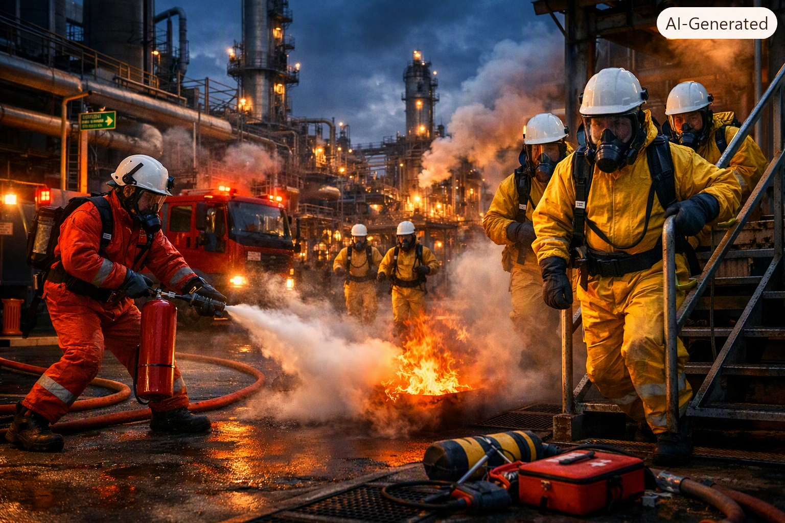

Emergencies in Oil & Gas

The oil and gas industry is one of the most high-risk industries in the world. Workers face hazards every day — fires, chemical leaks, explosions, falls from height, electrical shocks, and industrial accidents. This is why emergency response is a core skill for every person on site.
When an emergency happens, workers must act quickly and calmly. The first step is always to assess the situation — understand what happened, check for danger, and make sure you don't become a second casualty. Then you protect the injured person, give emergency first aid if you are trained to do so, and call for help.
Every oil and gas facility has a range of emergency equipment: fire extinguishers, first aid kits, defibrillators, emergency showers, SCBA (self-contained breathing apparatus), stretchers, and more. Workers must know where this equipment is and how to use it.
Facilities also have trained emergency specialists — medics, fire teams, and safety officers. On drilling rigs, a medic like Saresh Budhrani is responsible for treating the sick and injured, training workers in basic first aid, and coordinating evacuations.
In this unit, you will learn how to deal with accidents and emergencies in English — the procedures, the vocabulary, the grammar, and the communication skills you need to stay safe and help others.
🎙️ Listen to the audio, then read the text aloud. Record your audio and send via WhatsApp.